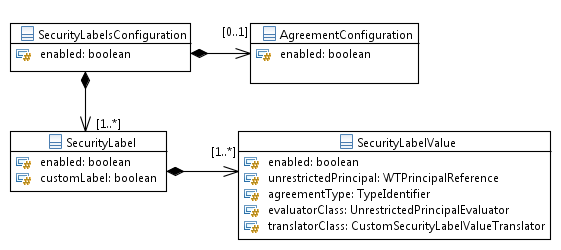

See: Description
| Class | Description |
|---|---|
| _SecurityLabel1 | |
| _SecurityLabel10 | |
| _SecurityLabel2 | |
| _SecurityLabel3 | |
| _SecurityLabel4 | |
| _SecurityLabel5 | |
| _SecurityLabel6 | |
| _SecurityLabel7 | |
| _SecurityLabel8 | |
| _SecurityLabel9 | |
| SecurityLabel1 |
SecurityLabel1 represents the set of possible values for a configured
security label.
|
| SecurityLabel10 |
Supported API: true Extendable: false |
| SecurityLabel2 |
Supported API: true Extendable: false |
| SecurityLabel3 |
Supported API: true Extendable: false |
| SecurityLabel4 |
Supported API: true Extendable: false |
| SecurityLabel5 |
Supported API: true Extendable: false |
| SecurityLabel6 |
Supported API: true Extendable: false |
| SecurityLabel7 |
Supported API: true Extendable: false |
| SecurityLabel8 |
Supported API: true Extendable: false |
| SecurityLabel9 |
Supported API: true Extendable: false |
| SecurityLabelsHelper |
This class serves as a helper class for the security labels configuration.
|
As its primary purpose, the security labels configuration package supports a customer-maintained security labels XML configuration file that is loaded into memory at Method Server startup. The site-level configuration file will contain definitions of all security labels. A security label consists of a marking indicating that the object contains sensitive information and a value indicating the level of sensitivity. Security labels act as a gate, prohibiting access by unauthorized users. A user must be cleared for each label value on an object to gain access to the object. Security labels are applied in addition to standard Windchill access control policy and ad hoc rules. A security label acts as a gate; if the user is not cleared for the security labels on an object, they cannot access the object, even if their access control permissions would otherwise allow them access. If the user does not have the necessary access control permissions, they cannot access the object, even if they are cleared for the security label settings on the object. To access an object, a user must be cleared for all security labels, either as an authorized participant or by an agreement, and have proper access control permissions for that object. An authorized participant can be cleared by being in the unrestricted group and/or as a result of evaluation performed by a custom class, depending on the configuration. Two types of security labels will be supported: standard security labels and custom security labels. The major difference between the two types of labels is that standard labels have an enumerated list of values pre-defined in the configuration file and custom labels have string values that are not pre-defined.
The configuration file will have a way to specify whether security label enforcement is enabled for the entire site. Security labels and values cannot be deleted from the configuration file while they are still in use. To help eliminate usage of security labels and values that the customer would like to delete, they can be disabled. Standard and custom security labels and standard security label values can be marked as disabled in the configuration file. Since custom security label values are not pre-defined in the file, there is no need to disable them. Marking a label or value as �disabled� only means that it no longer shows up in some user interfaces; it will not be enforced at the API level. Users can still see the label or value on existing objects; they just cannot set that label or value on any other objects, new or existing.
Standard security label values will be configured using enumerated type classes. Each label will have its own enumerated type class that will be used to represent the possible values for that label. As defined by the enumerated type infrastructure, a resource file will be generated for each enumerated type class. This generated resource file will contain all of the resource keys for the possible values associated with a given label. Since it is required that new enumerated type classes are modeled and we do not want to force customers to do any modeling for this feature, this package provides a set of enumerated type classes out of the box as a starting point. We also support customers modeling additional enumerated type classes. Standard and custom security labels and standard label values can be localized using the enumerated type classes. This package provides a convenient means to get the localized values for each. Note that custom security label values cannot be localized.
This package also maintains a mapping of parameters for security labels and standard security label values. Parameters defined on CAD parts and documents represent the security labels that need to be set. However, since there could be restrictions on the possible legal parameter names, it may not be possible to have the parameter name on the part or document exactly match the security label name as configured in the XML configuration file. Therefore, the configuration file will contain the parameter name that will be associated with any CAD parts or documents that wish to set a value on that particular label. Since there are fewer restrictions on the names of the parameter values, it is expected that those values exactly match the label values as they are configured in the XML configuration file. The configuration file will only support one CAD parameter value per label. If there are multiple CAD authoring tools being used, they must all use the same value for that particular parameter.
Only a subset of the described security labels configuration classes are supported. To determine if a class or one of its methods is part of the Supported API, consult the Javadoc for that class.
The configuration is stored in the wt.access.configuration.SecurityLabelsConfiguration class. Its structure
mimics the XML file elements. If agreements are configured, an wt.access.configuration.AgreementConfiguration element represents it. For each
security label, there is a corresponding wt.access.configuration.SecurityLabel instance, which itself has an instance
of wt.access.configuration.SecurityLabelValue for each security label
value. For custom security labels, there will only be one SecurityLabelValue
instance representing the CustomSecurityLabelValues
element in the XML.

Security Labels Configuration
APIs that are meant to be used by other packages are accessible through the
SecurityLabelsHelper class. It is preferable to
use this class instead of using the SecurityLabelsConfiguration class directly.